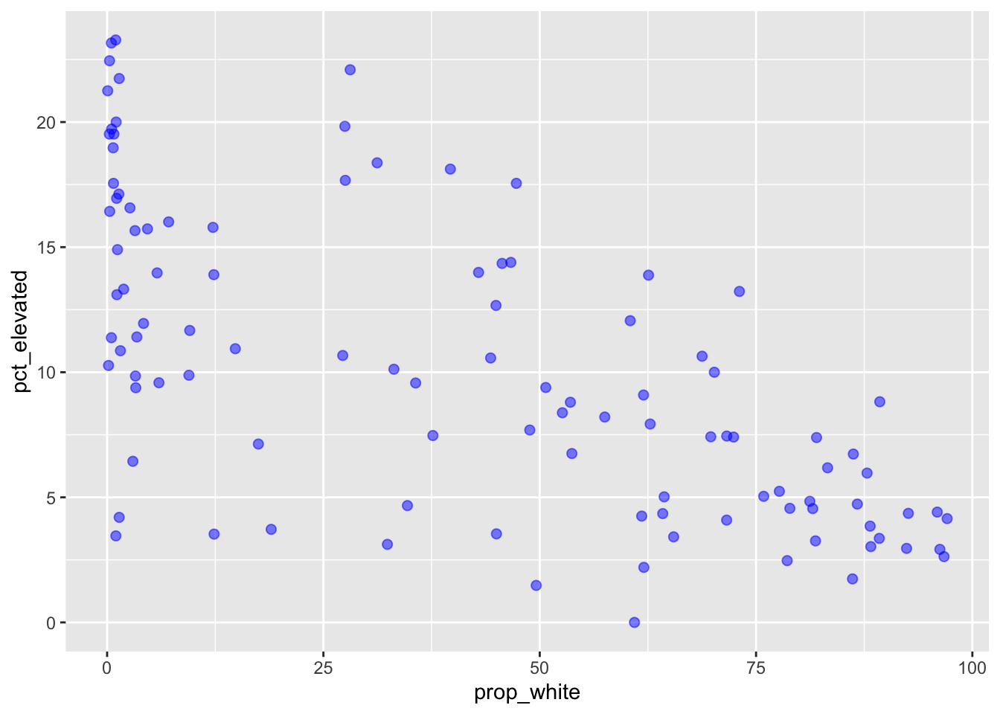
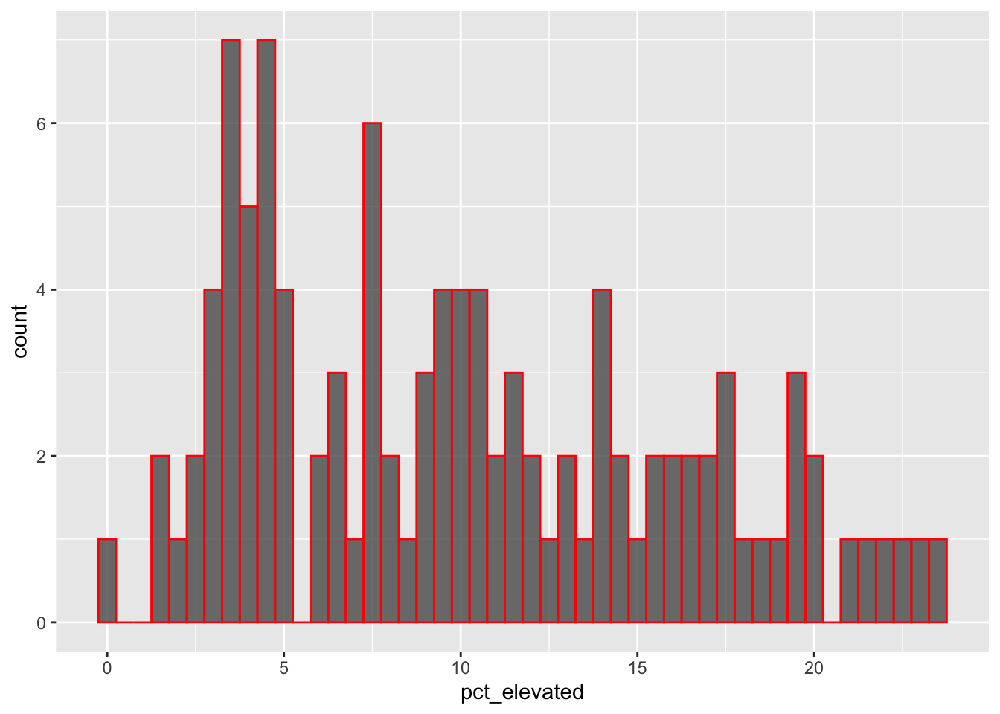

library(tidyverse)── Attaching packages ─────────────────────────────────────── tidyverse 1.3.0 ──✔ ggplot2 3.3.6 ✔ purrr 0.3.4
✔ tibble 3.1.0 ✔ dplyr 1.0.8
✔ tidyr 1.2.0 ✔ stringr 1.4.0
✔ readr 1.3.1 ✔ forcats 0.5.0Warning: package 'tidyr' was built under R version 4.0.5Warning: package 'dplyr' was built under R version 4.0.5── Conflicts ────────────────────────────────────────── tidyverse_conflicts() ──
✖ dplyr::filter() masks stats::filter()
✖ dplyr::lag() masks stats::lag()library(janitor)
Attaching package: 'janitor'The following objects are masked from 'package:stats':
chisq.test, fisher.teststl_lead <- read_csv(here::here("data",
"stl_blood_lead.csv"))Parsed with column specification:
cols(
geoID = col_double(),
tractCE = col_double(),
nameLSAD = col_character(),
countTested = col_double(),
pctElevated = col_double(),
totalPop = col_double(),
totalPop_MOE = col_double(),
white = col_double(),
white_MOE = col_double(),
black = col_double(),
black_MOE = col_double(),
povertyTot = col_double(),
povertyTot_MOE = col_double(),
povertyU18 = col_double(),
povertyU18_MOE = col_double()
)stl_lead <- stl_lead %>% clean_names()
stl_lead# A tibble: 106 x 15
geo_id tract…¹ name_…² count…³ pct_e…⁴ total…⁵ total…⁶ white white…⁷ black
<dbl> <dbl> <chr> <dbl> <dbl> <dbl> <dbl> <dbl> <dbl> <dbl>
1 2.95e10 118100 Census… 345 9.57 1161 192 414 100 724
2 2.95e10 117400 Census… 871 12.1 4307 447 2604 303 1338
3 2.95e10 126700 Census… 458 18.1 1089 199 432 116 631
4 2.95e10 119102 Census… 182 2.2 3237 309 2008 262 646
5 2.95e10 126800 Census… 486 4.73 3490 231 3026 270 194
6 2.95e10 126900 Census… 1296 15.7 4590 826 148 217 4320
7 2.95e10 108100 Census… 903 11.4 3144 464 108 111 3020
8 2.95e10 127000 Census… 585 10.9 2052 273 304 82 1739
9 2.95e10 127400 Census… 2116 3.12 5486 516 1777 391 3603
10 2.95e10 103700 Census… 417 3.36 2408 274 2149 212 156
# … with 96 more rows, 5 more variables: black_moe <dbl>, poverty_tot <dbl>,
# poverty_tot_moe <dbl>, poverty_u18 <dbl>, poverty_u18_moe <dbl>, and
# abbreviated variable names ¹tract_ce, ²name_lsad, ³count_tested,
# ⁴pct_elevated, ⁵total_pop, ⁶total_pop_moe, ⁷white_moe
# ℹ Use `print(n = ...)` to see more rows, and `colnames()` to see all variable namesstl_lead_prop <- stl_lead %>%
dplyr::mutate(prop_white = white / total_pop * 100)
stl_lead_prop# A tibble: 106 x 16
geo_id tract…¹ name_…² count…³ pct_e…⁴ total…⁵ total…⁶ white white…⁷ black
<dbl> <dbl> <chr> <dbl> <dbl> <dbl> <dbl> <dbl> <dbl> <dbl>
1 2.95e10 118100 Census… 345 9.57 1161 192 414 100 724
2 2.95e10 117400 Census… 871 12.1 4307 447 2604 303 1338
3 2.95e10 126700 Census… 458 18.1 1089 199 432 116 631
4 2.95e10 119102 Census… 182 2.2 3237 309 2008 262 646
5 2.95e10 126800 Census… 486 4.73 3490 231 3026 270 194
6 2.95e10 126900 Census… 1296 15.7 4590 826 148 217 4320
7 2.95e10 108100 Census… 903 11.4 3144 464 108 111 3020
8 2.95e10 127000 Census… 585 10.9 2052 273 304 82 1739
9 2.95e10 127400 Census… 2116 3.12 5486 516 1777 391 3603
10 2.95e10 103700 Census… 417 3.36 2408 274 2149 212 156
# … with 96 more rows, 6 more variables: black_moe <dbl>, poverty_tot <dbl>,
# poverty_tot_moe <dbl>, poverty_u18 <dbl>, poverty_u18_moe <dbl>,
# prop_white <dbl>, and abbreviated variable names ¹tract_ce, ²name_lsad,
# ³count_tested, ⁴pct_elevated, ⁵total_pop, ⁶total_pop_moe, ⁷white_moe
# ℹ Use `print(n = ...)` to see more rows, and `colnames()` to see all variable namesstl_lead_plot <- ggplot(data = stl_lead_prop, aes(x = prop_white,
y = pct_elevated)) +
geom_point(size = 2,
color = "blue",
alpha = 0.5)
stl_lead_plot
ggsave(plot = stl_lead_plot,
here::here("figs", "stl_lead_plot.png"),
width = 6,
height = 5)
# There is a general negative correlation between percentage of white people in this population and percentage of those with more lead
stl_lead_hist <- ggplot(data = stl_lead_prop, aes(x = pct_elevated)) +
geom_histogram(color = "red",
alpha = 0.8,
binwidth = 0.5)
stl_lead_hist
ggsave(plot = stl_lead_hist,
here::here("figs", "lead_histogram.png"))Saving 7 x 5 in image